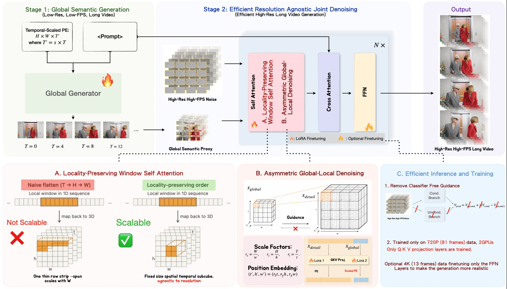

AtlasVid
Efficient Ultra-High-Resolution Long Video Generation
via Decoupled Global-Local Modeling
NeurIPS 2026
Dartmouth College
* Equal contribution
Generate long, detailed videos with decoupled global and local modeling.
Overview
AtlasVid separates global scene structure from local visual detail. A low-resolution, low-frame-rate semantic proxy guides a detail generator through hierarchical, locality-preserving attention. Trained at 720p with lightweight LoRA adaptation, the model scales to 4K and beyond without training on ultra-high-resolution long videos.
Temporally scaled RoPE extends the generation horizon, while aligned global guidance maintains coherence throughout a continuous shot.
More results
4K source · 161 frames
Videos are compressed to 720p for web playback. Source resolutions are indicated above.
Method
A global semantic proxy establishes the scene and motion. The detail branch jointly denoises high-resolution tokens using local attention and aligned global guidance.

BibTeX
@misc{mai2026atlasvid,
title={AtlasVid: Efficient Ultra-High-Resolution Long Video
Generation via Decoupled Global-Local Modeling},
author={Ziyang Mai and Yuyao Zhang and Yu-Wing Tai},
year={2026},
eprint={2605.16649},
archivePrefix={arXiv},
primaryClass={cs.CV},
url={https://arxiv.org/abs/2605.16649}
}